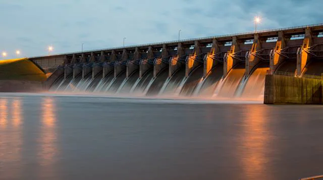

About 3,200,000,000 results (0.80 seconds)
- www.arrow.com
- research-and-events
- articles ...
Step 1: Harnessing Potential Energy. A roaring river releases potential energy in the form of kinetic energy and...
Step 2: Turning the Hydroelectric Turbine. Mechanical fans vary in shape and size. Generally speaking, the larger the...

www.usgs.gov
special-topics
water-science-school ...
USGS.gov | Science for a changing world - Hydroelectric Power ...
Power lines are connected to the generator that carry electricity to your home and mine. The water continues past the propellor through the tailrace into the river past the dam. By the way, it is not a good idea to be playing in the water right below a dam when water is released!
schools.bchydro.com
activities
electricity
How dams generate electricity | BCHydro Power Smart for Schools
Instructions When you begin the "How dams generate electricity" slideshow, hold on the title screen for a few minutes.Go around the room and ask students to share their ideas about what they know about electricity, where it comes from, and how dams work. On ...
www.reference.com
science
hydroelectric-dams-produce ...
How Do Hydroelectric Dams Produce Electricity?
Hydroelectric dams produce electricity by using falling water to spin a turbine that is connected to a generator through a large metal shaft. The power that the generator receives from the turbine is converted into electricity and then transferred to homes and other structures through power lines.
Videos

-
How Dams Produce Electricity
-
How electricity is produced from a dam
-
How to produce electricity from Dams
-
How a Dam Works
-
How hydroelectricity works
www.arrow.com
research-and-events
articles ...
How Do Hydroelectric Dams Work? | Arrow.com
Hydroelectric dams create vast hydrostatic potential energy stores, move large amounts of water through turbines, and spin generators that produce electricity. The largest hydroelectric dam in the world―the Three Gorges Dam in China's Yangtze River―can generate up to 22,500 MW of electricity.
www.worldatlas.com
articles
how-do-hydroelectric-dams-work
How Do Hydroelectric Dams Work? - WorldAtlas
How Do Hydroelectric Dams Work? Hydroelectric energy is a form of renewable energy produced by harnessing the power of moving water and converting that to usable electricity. A dam is a vital part of this process and works by reserving or holding back this power and controlling its flow.
www.turbinegenerator.org
hydro
hydroelectric-dam
Hydroelectric Dam - Hydroelectric Power Plant ...
Hydroelectric dams use a reservoir of water to capture and flow water through a hydro turbine generator to create electricity. How a Hydroelectric Dam works: A hydroelectric dam, like the one seen in the picture above, is usually built in a river or a lake.
www.easytechjunkie.com
how-is-electricity-generated-from-water
How is Electricity Generated from Water? (with pictures) - Info Bloom
Using the energy potential of trapped water in a dam is one way to generate electricity from water. There are some drawbacks to electricity generated from water. Dams, for example, can be quite destructive when they are installed, as water will flood the regions behind dams.
www.energy.gov
eere
water...
How Hydropower Works | Department of Energy
Hydropower, or hydroelectric power, is a renewable source of energy that generates power by using a dam or diversion structure to alter the natural flow of a river or other body of water. Hydropower relies on the endless, constantly recharging system of the water cycle to produce electricity, using a fuel—water—that is not reduced or eliminated in the process.
www.enbridge.com
energy-matters
energy-school...
How is hydroelectricity generated? - Enbridge Inc.
Hydroelectric power is a renewable energy source which harnesses the power of moving water to produce electricity. The hydroelectric process starts long before you turn your light on at home or work. Large scale hydroelectricity projects typically involve dams. Run-of-river and tidal projects also harness the power of moving water to generate ...
www.infobloom.com
how-do-dams-work.htm